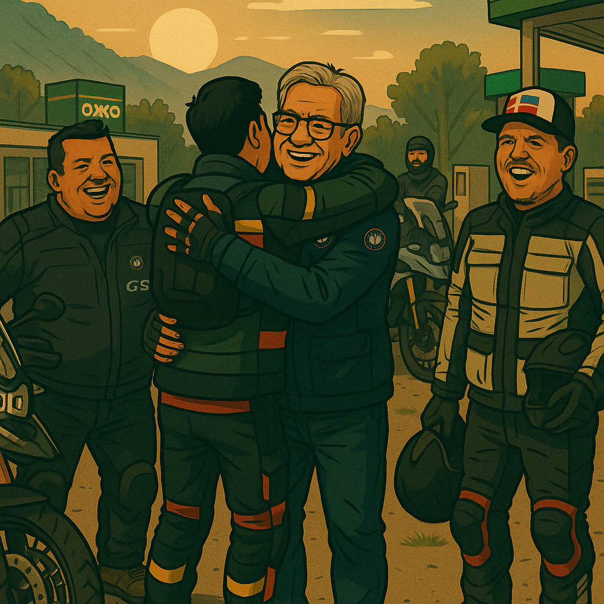
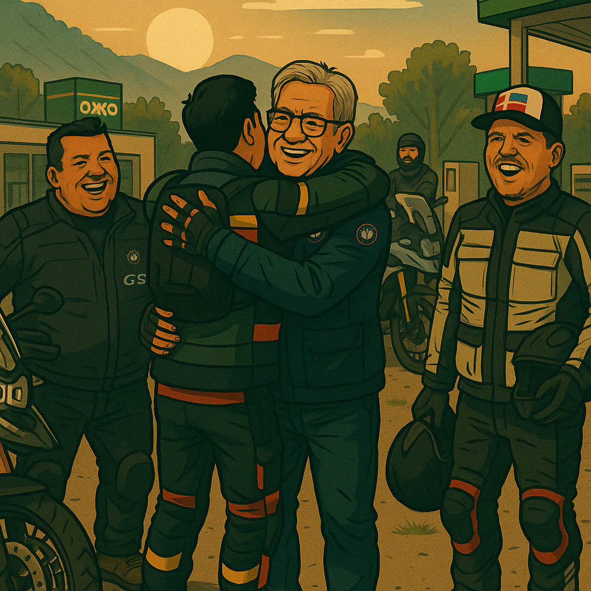

Chuy
Moto: Husqvarna 900
Frase: "¿Rodamos o qué?"
Anécdota: El organizador maestro de la rodada, todos lo siguen sin preguntar y aún así logra mantener la calma con una sonrisa. Sin él, no arranca nadie.

Miguel Castro
Moto: BMW GS1250
Frase: "Siempre llega como si tuviera un helicóptero."
Anécdota: Su moto fue la única que se rindió y tuvo que regresar en camioneta, pero él seguía sonriendo.
Fabricio
Moto: GS850 BMW
Frase: "Lento pero seguro"
Anécdota: Aunque siempre iba al final de la caravana, nadie se preocupaba: sabían que tarde o temprano llegaría… con fotos, historias y una sonrisa de oreja a oreja.

Germán
Moto: KTM 800
Frase: "Relajiento de nacimiento, cotorreador por vocación."
Anécdota: Siempre aparece en medio del relajo armando cotorreo donde no lo había. Nadie sabe cuándo llegó, pero cuando se dan cuenta ya todos están riendo. ¡Un clásico en la rodada!

Abraham "El Chicote"
Moto: GS850 BMW
Frase: "Tranquilo y sereno"
Anécdota: Nadie sabe porque le dicen chicote pero seguro es por su chispa en el cotorreo!!

Diego
Moto: Dominar 400
Frase: "Fotos !!! Fotos !!!"
Anécdota: trae la moto con menor cilindrada, pero pocos le hacen sombra en las rodadas, chiquita pero picosa ( la moto claro )!!
Memo
Moto:GS850 BMW
Frase: "¿Esta escalera surrealista... lleva a tu corazón?"
Anécdota: En el Jardín Escultórico de Edward James, mientras todos admiraban las estructuras imposibles, Memo admiraba a la guía turística. Se ofreció a “protegerla del calor” caminando a su lado todo el recorrido. Al final no entendió mucho del arte… pero aseguró que fue su parte favorita del viaje.
Chuy Jr
Moto:KTM 800
Frase: "¡No era curva… era una señora!"
Anécdota: En plena carretera, mientras rodaba junto a Andrés, una señora cruzó de la nada. Ambos frenaron en seco, pero el susto los dejó sin habla... y sin claxon. Desde entonces, cada que ven una silueta sospechosa, gritan: “¡Vieja al frente!”. La señora está bien… ellos no tanto.
Sergio
Moto:GS850 BMW
Frase:“Soy biker, Uber y paquetería… todo terreno.”
Anécdota:Cuando la moto de Miguel se rindió, Sergio se convirtió en héroe logístico. Dio tantas vueltas recogiendo cascos, chamarras y hasta un termo que al final preguntó si no querían que también trajera la moto en piezas. Dicen que ya lo andan contratando para Rappi Aventurero.
Betito
Moto:CFMoto 800
Frase:“No hables a menos que pueds mejorar el silencio.”
Anécdota:Siempre va tan al frente de la caravana que cuando los demas llegan el ya se tomo una selfie, comió y ya está listo para arrancar otra vez.
Andres
Moto:BMW GS850 Triple Black
Frase:“Yo solo iba por la toma perfecta… ¡no por la señora!”
Anécdota:Como fotógrafo oficial del grupo, Andrés no suelta la cámara… ni en carretera. En una curva, iba buscando el ángulo ideal cuando una señora cruzó la carretera sin previo aviso. Frenó tan fuerte que casi le toma una foto dental. Desde entonces, le dicen “el disparo rápido”… pero no por la cámara.
Don juventino
Moto:BMW GS850
Frase:“A mis años, aún ruedo mejor que muchos chamacos.”
Anécdota:A sus 70 años, no solo rodó toda la ruta sin quejarse… ¡también brindó como si tuviera 25! Algunos aseguran que hasta cantó rancheras y pidió “una más” cuando todos ya estaban dormidos. Es leyenda viva sobre ruedas.
Carnicero
Moto:BMW GS850
Frase:“Yo no me pierdo… exploro rutas alternativas.”
Anécdota:En la rodada a la Sierra Gorda, el Carnicero fue visto más veces entrando y saliendo de caminos desconocidos que rodando en la ruta principal. Cada que alguien preguntaba por él, la respuesta era: “Ya volvió a tomar el camino escénico”. Dicen que conoció más pueblos que el INEGI.
Carnicero Jr
Moto:Honda CB650R
Frase:“Yo solo vine a rodar… ¡y a ver qué se arma!”
Anécdota:En su primera rodada oficial con el grupo, Carnicero Jr. demostró que el talento corre por las venas… pero también la indecisión. En cada bifurcación volteaba a ver a su papá, como si esperara señal de banderillero. Al final, no se perdió ni una curva… aunque casi se pasa la entrada del hotel porque iba viendo su propio reflejo en el tanque de la moto.
Carlos Sanchez
Moto:GS 850 Adventure
Frase:¿Y ahora qué fregados pasó?”
Anécdota:Carlos no necesita GPS, porque va marcando la ruta con sus quejas. Si hace calor, reniega. Si hace frío, también. Si hay curvas, más. Pero eso sí, no falta a ninguna rodada. Algunos dicen que su moto anda a base de coraje, y que los baches se abren solos cuando lo ven venir.
Juan Carlos
Moto:GS 850
Frase: “Con el dron capturo todo... menos mi dignidad si me caigo.”
Anécdota:Llegó a la rodada con su dron como si fuera parte de una producción de Netflix. Lo voló en cada parada, en cada curva, en cada desayuno. Pero el momento estelar fue cuando intentó seguir al grupo desde el aire... y el dron se estrelló en un mezquite. Desde entonces, todos le gritan “¡Altura!” cuando arranca.
Paul Gomez
Moto:GS 850
Frase: “Mi papá rueda más que tú y Edward James juntos.”
Anécdota:Hijo orgulloso de Don Juventino, Paul no solo rueda, ¡defiende la historia! Durante la visita al jardín escultórico, terminó en un acalorado (pero respetuoso) debate con la guía sobre si Edward James realmente vivía como artista o como excéntrico con presupuesto. Al final, convenció al grupo... y a la guía le quedó claro que Paul no solo hereda el estilo de su padre, ¡también el carácter!
 
